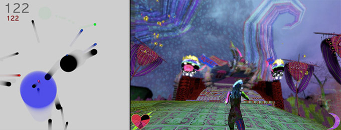
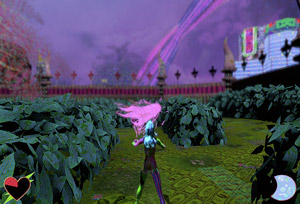
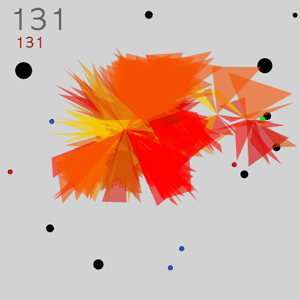

Pace Digital Gallery is pleased to present an exhibition curated by Michelle Kasprzak (Scotland), The Aesthetics of Gaming.
Explore Anita Fontaine + Mike Pelletier's CuteXdoom II and Joe Mckay's Avoid that present two interactive scenarios with strong aesthetic qualities that are radically different to the look, feel, and modus operandi of a typical commercial game!
The Aesthetics of Gaming
~Michelle Kasprzak
February 10 - March 3
Reception Feb 26, 5 - 7pm
(5:00 pm lecture by Joe McKay / 6:00pm reception)

images (L-R): screenshots from Joe McKay, Avoid, Anita Fontaine and Mike Pelletier CuteXdoom II; patterns used on this page from CuteXdoom II
At the Interactive City summit in 2006, design guru Matt Jones conducted an informal poll that guests could respond to immediately using their mobile phones. The poll was a fragment of a question: Games or stories? This short but provocative query caused a low rumble of chatter within the group, and within minutes results began appearing, showing more or less a tie. What made the question stimulating was that the two are so intertwined, it can often be unclear where the story stops and the games begin. Can games live without even the roughest hint of a narrative, and can stories develop without an element of a game?
This exhibition presents two game environments that address both the intertwining of games and stories and the aesthetics of artist-created games. CuteXdoom II by Anita Fontaine and Mike Pelletier is a game modification that transforms Unreal Tournament 3 into a digi-Rococo experience. Players are tasked with the mission of piloting their poisoned character, Sally Sanrio, through a world that is simultaneously cute and sinister in search of the antidote. CuteXdoom II expands the narrative developed in the first instance of the project, wherein Sally Sanrio is drawn to the CuteXdoom cult, which centres around the notion that 'the possession and worship of cute material objects will ultimately lead to happiness'.
The CuteXdoom series utilizes the aesthetics of kawaii (Japanese style of "cuteness") and otaku (obsessive fan-based culture of anime and computer games), but these influences are ultimately just parts of the overall style that emerges under Fontaine's direction. The incredible level of detail, striking color palettes, and repeated patterns and imagery are distinctly Fontaine's and contribute to a delightful and dazziling game experience that is the aesthetic opposite of the formulaic graphics usually delivered via the Unreal Tournament platform. The CuteXdoom game aesthetic also responds to the story, using darker imagery to emphasize the main character's altered state due to the consumption of the poison.
Joe McKay's Avoid also breaks from the dominant aesthetic of commercial games, and utilizes a look that is beautiful in its minimalism. The premise of the game is to avoid the black dots, and to "eat" the colored dots, with the pace of the game dictating a high level of concentration from the player. The game was developed with Processing, which is described by its creators as "an electronic sketchbook for developing ideas." Avoid, too, can be seen as a nearly-blank sketchbook upon which players can superimpose their own traces of narratives: clinging to life (when you only get one), consuming good, avoiding bad, acting in self-preservation. Though Avoid is, at its heart, a puzzle game much like widely-known games Tetris and Minesweeper, McKay's statement about the game includes discussion of longevity, having only one life and making the most of that one life, which immediately lends a rule-based puzzle more of a human, narrative direction.
CuteXdoom II and Avoid present two distinct approaches, which are unified by their contributions to an evolving aesthetic of gaming. These two works mark a stage in the use of game platforms and structures by artists, which will see further evolution as technology advances, more game platforms develop or open up, and a notion of what games could be and could look like expands.
The Aesthetics
of Gaming is an exhibition at Pace University.
Joe McKay will speak publicly about his work on Thurs Feb 26, 5:00 pm, followed by a reception
at 6:00 pm -
please join us! This is a free event, open to the public.
INFO ABOUT THE ARTISTS
 Anita Fontaine was born in Australia and lives in Amsterdam. She is the co-founder of Champagne Valentine, an award-winning studio for motion, gaming, & mobile media. She has exhibited at venues including Ars Nova Museum in Finland and Maxalot Gallery in Amsterdam. Canadian artist Mike Pelletier holds a BFA from ACAD in Calgary. He works as a freelance designer and programmer, having worked at the Banff Centre's Creative Electronic Environment for 5 years. His artworks, exhibited internationally, include drawing & videogame modifications.
Fontaine's website. Pelletier's website
CuteXDoom II manipulates the platform of Unreal Tournament, a traditionally violent videogame, to address the themes of obsession and fanatical adherence to ideologies, with particular reference to Japanese otaku culture.
 Joe McKay is a new media artist. Canadian born, he currently lives in Oakland, CA where he is teaching a game design class at UC Berkeley. Joe likes getting positive feedback and game play ideas so much that he's willing to give out his email (joester5 at mac dot com).
Visit the artist's website.
Download Avoid
In Avoid you must try to stay alive as long as possible. At first this is easy, simply "avoid" the black dots. But soon, as the game-space gets more cluttered, this becomes more difficult. Fortunately, there are the colored dots to help you. Each of these dots change the game in some way, and the key to longevity is carefully timing their consumption. This game stretches the mind to try and keep track of many things at once without concentrating too hard on any one object - and it's fun. Avoid the "home edition" is free for download from McKay's website, above.